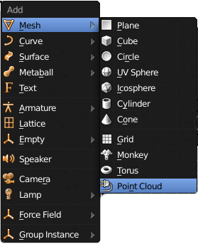
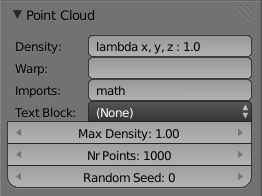
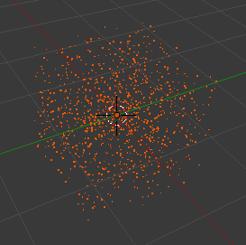
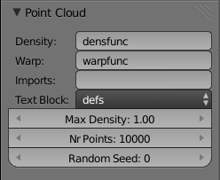
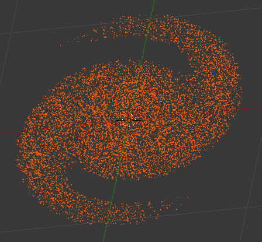
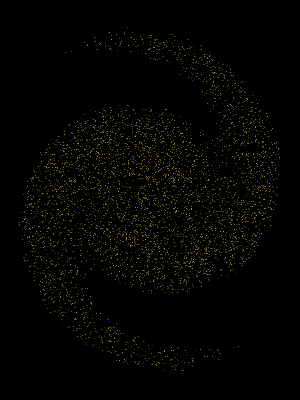

Point Cloud Maker is an addon for Blender
to create simple clouds of points: these are mesh objects which consist only
of vertices, without connecting edges or faces. Rendering these with
halo materials can produce some interesting effects, such as starfields, perhaps
even plasma or smoke/clouds.
To install Point Cloud Maker, launch Blender, bring up the
User Preferences window, select the Add-Ons tab, and click the “Install Add-Ons”
button. In the file selector dialog that comes up find your way to the directory
containing the point_cloud_maker.py file, select it, and click the
“Install Add-On...” button. This will take you back to Blender’s
User Preferences window, where you should find that Point Cloud Maker is now listed among
the available add-ons, which you can enable for the current document by ticking its
checkbox.
To use Point Cloud Maker, the basic steps are:
- (Optional) Create a text block in your Blender document containing additional
Python code for use by the Point Cloud functions.
- Add a Point Cloud mesh to your scene.
- Set the parameters for the Point Cloud mesh: the density function, the (optional)
warp function, and the (optional) name of the text block you previously created,
if you made one.
- When you are happy with the appearance of the Point Cloud object, you can
add further embellishments, such as
- Assign it a halo material for rendering as part of your scene; or
- Parent another object to it for duplication at each vertex (DupliVerts).
Adding a New Point Cloud Object
To add a new Point Cloud object to your scene, simply go to Blender’s
Add menu (SHIFT+AKEY), and you should see, in the Mesh submenu,
a new Point Cloud option:

Immediately you have added a new Point Cloud object, you should see the
following settings panel appear at the bottom of the Tool Shelf at the left of
Blender’s 3D view (you can make the Tool Shelf visible with TKEY if it
isn’t already).

- The density function is a function of the base x, y and z
coordinates, and returns a value (in the range from 0 up to the Max Density)
which governs the relative probability of a point appearing at that coordinate.
Note that the base x, y and z coordinates must lie in the interval
-1.0 to +1.0. However, you can of course scale up (or scale down) the point cloud object
to a different size after making it. Or you can apply a warp function.
- The optional warp function takes the base x, y and z
coordinates as arguments, and returns a tuple of transformed (x', y', z')
coordinates. This allows you to transform the base coordinates to a different range of values;
or by applying a more complex function, it can warp the coordinate space into
an entirely different shape. This allows you to produce twisted shapes more easily
than trying to figure out how to implement curved distributions directly in the
density function.
- The imports field names one or more Python modules that are automatically
imported before evaluating the text block, density and warp functions. The math
module is probably the most useful, which is why it is included by default. If
you want to import more than one, separate their names with commas.
- The text block menu lets you choose a previously-created text block; the
contents of the block are executed as Python code before evaluating the
density and warp functions. This allows you to define more complicated functions
than might be expressible directly as single Python expressions, and use them
in the density and warp functions.
- The max density field lets you tell Point Cloud Maker what to expect
as the maximum value that the density function will return. This is used to normalize
that value for calculating actual probabilities for generating points.
- The number of points field controls how many vertices are generated for
the point cloud.
- The random seed is used to control the pseudorandom sequence for
generating the point cloud. Choosing the same non-negative starting value should
always produce the same pattern of points (assuming the other settings are the
same). Entering a negative value here causes a truly random starting seed to
be chosen, so you won’t get the same pattern twice!
The density and warp functions must be Python functions.
Note how the default density function takes the form “lambda x, y, z : expr”,
being an anonymous function of 3 arguments, returning a single real number. Alternatively,
you can specify the name of a function defined in the text block.
Beware of changing the text block contents while adjusting the
parameters of a point cloud object at the same time. Because of a quirk in
the way Blender implements undo/redo, you will find that changes to your text
block are lost every time you change anything in the point cloud settings panel.
If you want to make changes to the text block, first delete the point cloud
you were trying to create, change the text, perhaps even save your Blender document
for good measure, then add a new point cloud before making changes to its
settings.
When you create a new point cloud, the initial default density function is
“lambda x, y, z : 1.0”, with no warp function. This defines a uniform
(constant) point density over a cube 2 units on a side—exactly the dimensions of the default
cube in a new Blender document.

Change the density function to
“lambda x, y, z : math.sqrt(x * x + y * y + z * z) <= 1.0”, and you
get a spherical (constant-radius) cloud. Now try putting additional multiplication
factors on the x * x, y * y and z * z terms, and you
can flatten or elongate the sphere along the respective axes, into an ellipsoidal shape.
In this example, the density and warp functions are defined in a text block.
The density function, called densfunc, produces
a flattened, ellipsoidal-shaped cloud of points, while the warp function,
warpfunc, swirls the points around to create a two-armed galactic spiral
shape. The swirl is implemented by calculating an angle theta which is
proportional to the distance of the point from the centre, and then using that to apply
a rotation of the coordinates about the z-axis.
import math
def densfunc(x, y, z) :
r = math.sqrt(x * x + 3 * y * y + 40 * z * z)
theta = math.atan2(y, x)
return r <= (abs(math.cos(theta)) + 8) / (abs(math.sin(theta)) + 8)
#end densfunc
def warpfunc(x, y, z) :
theta = math.sqrt(x * x + y * y) * 5
return (x * math.cos(theta) - y * math.sin(theta), x * math.sin(theta) + y* math.cos(theta), z)
#end warpfunc
Assuming the text block is called “defs”, the above definitions are
then used to create a point cloud as follows:

The resulting point cloud looks in the 3D view something like this:

And rendered with a suitable halo material, produces an image like this:

An example animation produced from a more elaborate version of this can be viewed
here.